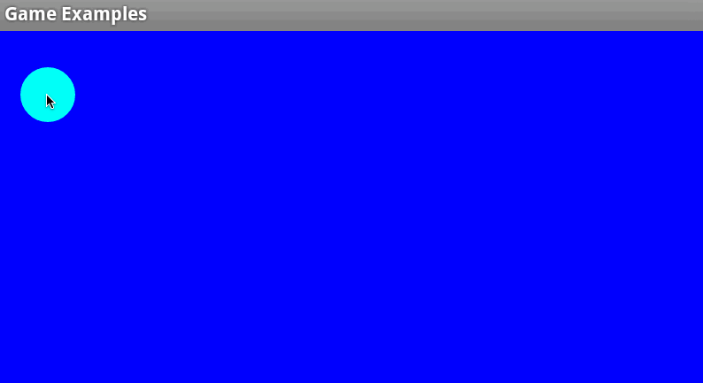

How to MMOize Anything
without starting a server

It started as an April Fools joke
Seb Lee-Delisle's MMO Asteroids blog post
Our response
http://tinyurl.com/MMOasteroids
MMOization
+
Lots of fun
A little bit about 
Firebase Realtime Backend
175,000 registered developers
Realtime is
Where your bus is
Some Java code
// Write
Firebase ref =
new Firebase("https://dinosaurs.firebaseio.com/");
ref.child("note").setValue("Dinosaurs are awesome");
Dinosaur brontosaurus = new Dinosaur();
ref.child("really-existed").push().setValue(brontosaurus);
// Read
ref.child("note").addValueEventListener(
new ValueEventListener() {
public void onDataChange(DataSnapshot snapshot) {
Log.v(TAG, snapshot.getValue());
}
public void onCancelled(FirebaseError firebaseError) {
Log.e(TAG, "Uhoh! " + firebaseError);
}});
Bubble Making "Game"

by eburke, on GitHub
Refactoring Bubble Game
- Imported into Android Studio
- Gutted the low level semaphore stuff
Hacking Multiplayer Bubble Game
// Replace writes
// This
public void addBubble(float x, float y) {
bubbles.push(new Bubble(x,y));
}
// Becomes
public void addBubble(float x, float y) {
firebaseRef.push().setValue(new Bubble(x, y));
}
Hacking Multiplayer Bubble Game
// Add listeners to model constructor
// Listen to changes in bubbles from everywhere
firebaseRef.addChildEventListener(new ChildEventListener() {
public void onChildAdded(DataSnapshot snap, String s) {
// Add to local copy
bubbles.put(
snap.getKey(),
snap.getValue(Bubble.class));
}
...);
Play Test
Fixing Chatty Bubbles
// Find chatty data
Class Bubble {
long radius;
...
}
// Calculate locally where you can
Class Bubble {
long born;
public long getRadius() {
long deltaMs =
System.currentTimeMillis() - this.born;
return deltaMs * RADIUS_CHANGE_PER_MS + INITIAL_RADIUS;
}
}
Fixing Clock Skew
// Listen for clock skew
Firebase skewRef = new Firebase(
"https://dino.firebaseio.com/.info/serverTimeOffset");
skewRef.addValueEventListener(new ValueEventListener() {
public void onDataChange(DataSnapshot dataSnapshot) {
clockSkew = dataSnapshot.getValue(Long.class);
}
});
// Use it elsewhere
public long getRadius() {
long deltaMs = currentTime - this.born + clockSkew;
return deltaMs * RADIUS_CHANGE_PER_MS + INITIAL_RADIUS;
}
Fixing Zombie Players
// Add an on disconnect handler
playerDataRef.onDisconnect().removeValue()
Play Again
The End
- Slides: mimming.com/presos/how-to-mmoize-anything (code)
- Bubble Thinggy: github.com/mimming/bubble-thinggy